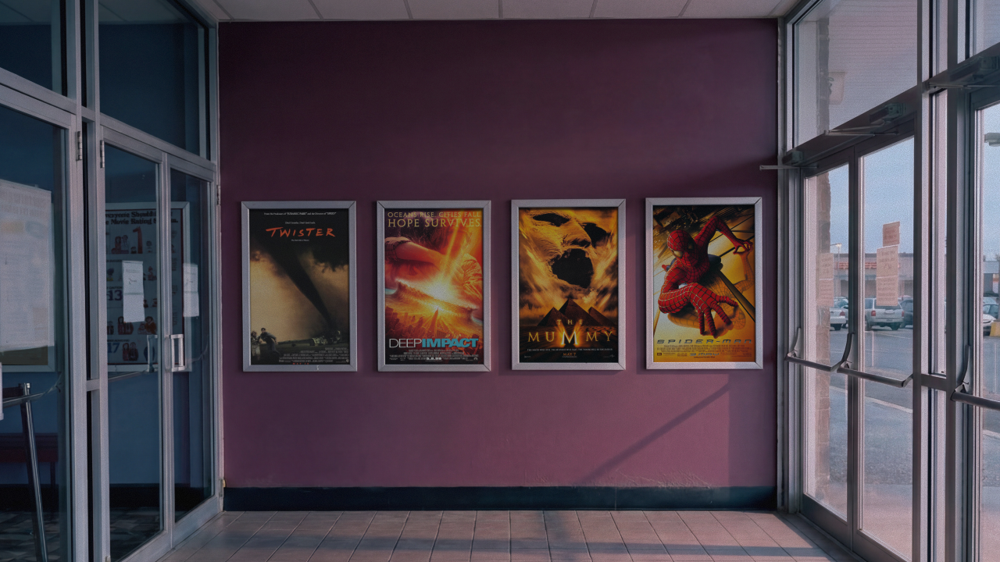
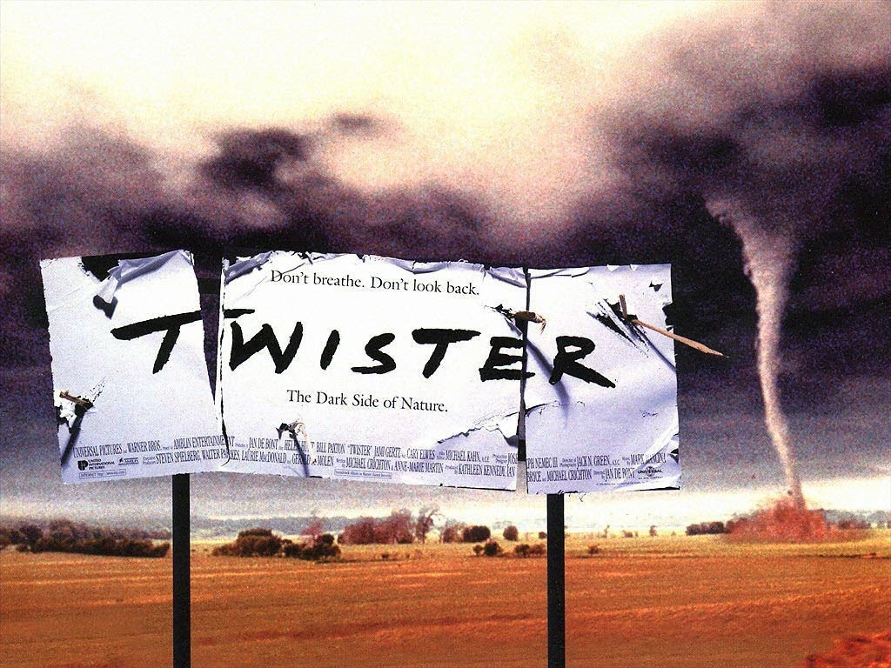
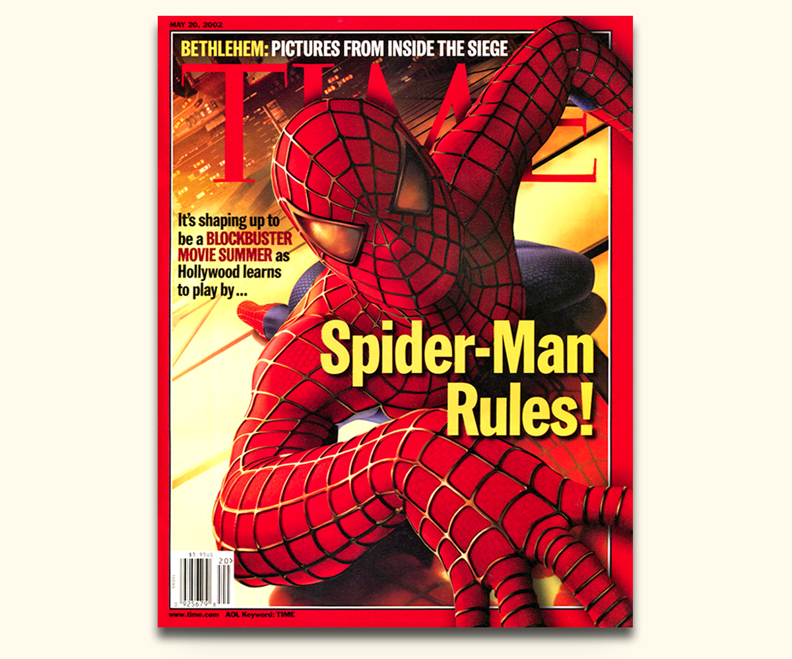
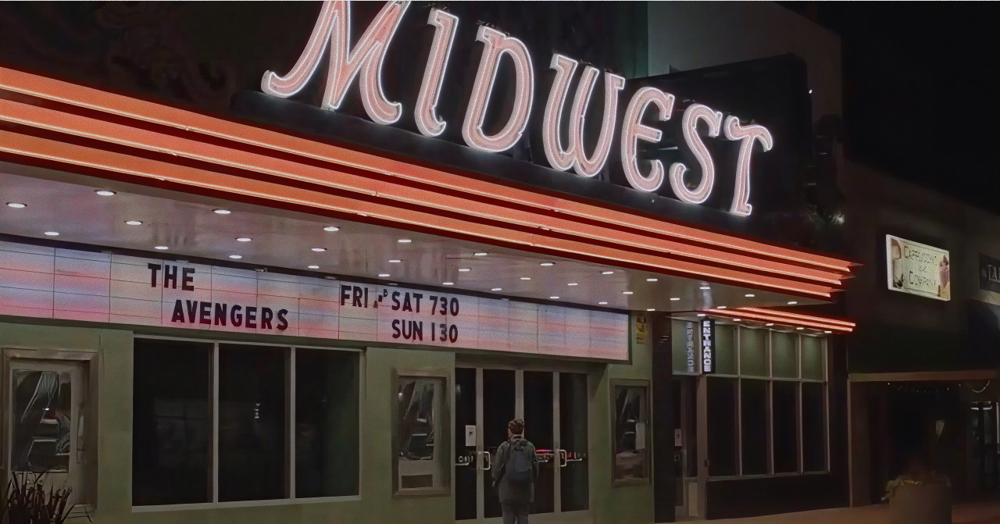
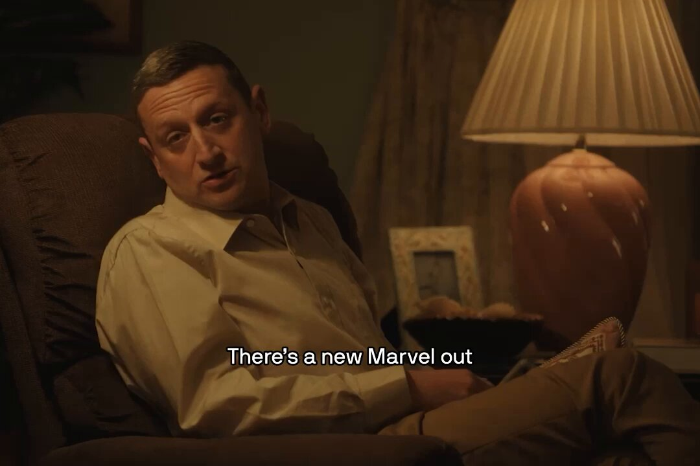
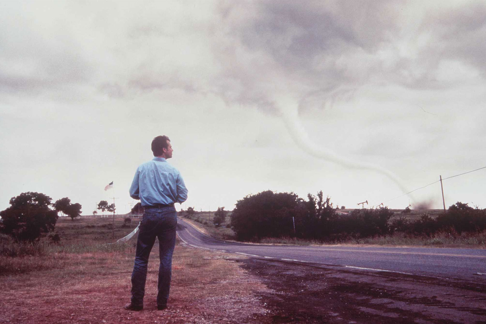

This May marks the thirtieth anniversary of the first-weekend-of-May summer opener—the slot that once served as the year’s first tentpole arrival, the day from which everything else in the season measured itself. It was made up almost out of nothing in 1996, weaponized by Marvel in the 2010s, lost its hold during the pandemic, and now appears to be in the early stages of something else.
1996–2001
Many people credit The Mummy with inventing the first-weekend-of-May start to the summer movie season, and technically they’re right. It was the first major studio tentpole to release on the literal first weekend of May, debuting May 7, 1999.
But spiritually (and these are my personal beliefs) the stakes were laid three years prior, in 1996, with Twister, with Deep Impact carrying the tradition forward in 1998.
Why the discrepancy? It comes down to days. Twister opened May 10, 1996, and Deep Impact opened May 8, 1998—each landing on the second weekend of May rather than the first. The Mummy, opening May 7, 1999, was the first studio tentpole to release on the literal first weekend. Twister and Deep Impact had the same instinct to move the summer season up two weeks from Memorial Day, but with just a slightly different pin on the calendar.
This instinct wasn’t really about the calendar. It came out of the kind of blockbuster Twister was. For decades, studios had put their biggest movies in summer, or on holiday weekends, because that was when audiences had time. But the movies themselves were just placed on the calendar. They didn’t think about it. Twister did. Twister was a movie that knew it was a summer movie. It knew it was supposed to launch a season, that it had a role to play in the year’s shape. The date became part of the identity.
1996, in my mind, was a pivotal year for the modern blockbuster. Twister and Independence Day led the pack, both landing in a different register than the spectacles that preceded them, like Jurassic Park or Batman Forever. There was something shinier about the 1996 crop—sharper, more knowing. Blockbusters had been around since 1975. Jaws could be Twister’s dad. And it’s like this new era of blockbuster came with a little bit of generational wealth.
It’s a matter of scale, too. I don’t recall anyone talking about opening weekend records until 1997, after The Lost World and Men in Black. Probably because I wasn’t paying attention. But it’s still funny to think that something held that record prior to The Lost World.

Back to the first weekend of May. For most of the 1980s and into the early ’90s, Memorial Day weekend was the magnet—the slot where studios planted their summer tentpoles and let them hold the field alone. The Empire Strikes Back (1980). Return of the Jedi (1983). Indiana Jones and the Temple of Doom (1984). Beverly Hills Cop II (1988). Indiana Jones and the Last Crusade (1989). Back to the Future Part III (1990). Alien 3 and Lethal Weapon 3 (1992). Cliffhanger (1993). The first weekend of May was a runway. The party didn’t start until late May.
What 1996 introduced was a second pole. Studios didn’t just move late-May titles up. They added another tentpole at the front end, two weeks ahead of Memorial Day, and ran the season as a one-two punch: big event, then bigger event. Twister and Mission: Impossible (1996); Deep Impact and Godzilla (1998); The Mummy and Star Wars: Episode I — The Phantom Menace (1999); Gladiator and Mission: Impossible II (2000); The Mummy Returns and Pearl Harbor (2001).
What’s interesting is the asymmetry that emerged. The Memorial Day release was always positioned as the bigger event, but in several of those pairings, the first-weekend-of-May entry outgrossed the Memorial Day release domestically. Twister beat Mission: Impossible. Deep Impact beat Godzilla. The Mummy Returns beat Pearl Harbor. Gladiator won Best Picture. The opener wasn’t supposed to be the headliner, but it kept turning out to be.
2002–2011
In 2002, that got flipped officially with Spider-Man, which debuted May 3. At the time, no one was expecting Spider-Man to open bigger than Star Wars: Episode II — Attack of the Clones, which opened two weeks later on May 16. Forecasts saw it opening closer to X-Men’s $54 million, with a chance of beating The Lost World’s May record of $72.1 million. Brandon Gray of Box Office Mojo predicted $84.7 million. A few days later, BOM’s Sean Saulsbury published the article “Derby Players Stunned by ‘Spider-Man’s’ Record,” reporting that the average prediction accuracy was the lowest in the derby’s history. Spider-Man’s $114.8 million domestic opening shattered reality. It crossed a threshold no one knew was possible—the first $100 million opening in history—and gave a taste of what the future could be like. We had sensed the world was changing. Spider-Man confirmed it.

A similar dynamic played out in 2008 with Iron Man and Indiana Jones and the Kingdom of the Crystal Skull. A 21st-century hero against a 20th-century hero. Indy held Memorial Day, where the previous three installments had opened, and Iron Man took the May opener, an unproven Marvel property fronted by an actor whose career was, at the time, considered a comeback story. Iron Man finished a hair ahead domestically ($318 million to Indy’s $317 million) and would launch the franchise that defined the next decade. Indy wouldn’t return for fifteen years.
There was a lull from 2004 to 2006, as if the industry was resetting in the shadow of Spider-Man. In 2004, Universal brought back Stephen Sommers (director of The Mummy and The Mummy Returns) to take a swing at the vampire genre with Van Helsing. It opened to $51.7 million but couldn’t sustain. In 2005, Ridley Scott returned to the coveted May slot with Kingdom of Heaven, looking to extend the lineage he’d planted five summers earlier with Gladiator. It bombed at $19.6 million. And in 2006, in some kind of karmic move, Mission: Impossible III—the franchise that had once been the Memorial Day staple, with the first two installments anchoring late May in 1996 and 2000—opened the season instead. It is the lowest-grossing entry of the now eight-film franchise.
In 2007, Spider-Man 3 reclaimed the weekend and set the opening-weekend record—not just for the first weekend of May but for any opening weekend in history, at $151.1 million. (It would only hold that record until the following summer, when The Dark Knight stole it away.) Then came Iron Man, and there was no turning back.
2012–2019
The Avengers opened on May 4, 2012. This cemented what Iron Man started, claiming the weekend for Marvel. The 2012 release opened to $207.4 million—a new all-time opening-weekend record—and the franchise held the slot through the rest of the decade. Iron Man 3 in 2013, Avengers: Age of Ultron in 2015, Captain America: Civil War in 2016.
In 2016, something interesting happened. Captain America: Civil War and Batman v Superman were both slated to come out the first weekend of that May. For a long time, neither budged, but ultimately Batman v Superman moved up a couple of months to March 25, leaving Marvel the slot it had made its own. Batman never really had a right to open that weekend anyway. Batman is such a June franchise, or July if Nolan’s directing.
BvS opened to $166 million, a new March record by a wide margin, proof that a tentpole no longer needed a tentpole month. The release calendar’s seasonal logic, already loosening, would never quite recover. Within a year, Beauty and the Beast was opening to $174 million in March 2017. Black Panther did $202 million in February 2018. Captain Marvel did $153 million in March 2019. Even September, notoriously the weakest month, got its first $100+ million opener with the remake of It in 2017. Months that had once been off-season had become tentpole real estate. The map of the year had been redrawn.

Avengers: Infinity War and Avengers: Endgame, each slated for the May weekend in 2018 and 2019, took a sort of sacrilegious swing to inch the summer opener further into April (they opened April 27 and April 26, respectively). They did it because they could. Marvel had cemented the first weekend of May as Marvel’s, and now it was abandoning the date by a week like a statement of entitlement. They could open this movie on a non-existent thirteenth month of the year and people would find a way. But the move also fit a larger drift. The release calendar had been losing its ceremonial structure for years, and Marvel was just the loudest example. Months that once had a defined character—March was off-season, May 1 was the ribbon-cutting, July was the heavyweight slot—were dissolving into one another.
It echoed the way advance showtimes had been creeping earlier, too. In the early 2000s the earliest you could see a movie was midnight Thursday. Then 10 p.m. Thursday. Then 7 p.m. By the late 2010s, opening “day” had stretched well into Thursday afternoon. The boundaries of the cinematic week, like those of the cinematic year, were dissolving.

It reached its logical conclusion in 2019, with Endgame breaking the opening weekend record just set the year prior with Infinity War. It broke in a devastating way. It didn’t inch past the record, like record breakers usually do. It soared past it, like $357,115,007 was easy, like we should’ve known that was possible all along. It broke Infinity War’s record by $100 million. It essentially took the record-holder and added Spider-Man’s 2002 record on top of it, like it was nothing. There will never be another opening weekend like that again. Because it was too high. Because it was a product of two decades of box office build-up, something no studio will ever be able to recreate. And because the box office is dying.
2020–Present
Things of course have not been the same. Endgame soared too high. The pandemic shuttered cinemas, as well as fragmented our collective sense of time and the milestones we used to mark it by. The world seems less interested in ceremony, at least ceremonies like the summer movie season getting kicked off the first weekend of May. It doesn’t matter if something comes out in May, or April, or October, or September. It doesn’t even really matter if it comes out in theaters.
The #1 movie the first weekend of May 2020 was The Wretched, grossing $65,908 (one of the most mind-boggling weekend numbers since Spider-Man in 2002). In 2021, Wrath of Man held the number-one spot with $8 million, at least back to 1970s numbers. In 2022 and 2023, we returned to a little bit of normalcy with Doctor Strange in the Multiverse of Madness ($187 million) and Guardians of the Galaxy Vol. 3 ($118 million).

Then, after Eternals, The Marvels, and Captain America: Brave New World, the empire faltered. People stopped using the term “universe,” and the first weekend of May opened up again. With Marvel out of the way, there was once again room for Van Helsings and Kingdom of Heavens, which is exactly what The Fall Guy was in 2024. Like Stephen Sommers, David Leitch was a successful blockbuster director taking a swing at something original, and it flopped. Marvel made one more attempt in 2025 with Thunderbolts, which admittedly did better than some of us were expecting, but it felt like vapor.
In 2026, the headliner is The Devil Wears Prada 2. It feels more appropriate to the slot than Thunderbolts did, or even Guardians of the Galaxy Vol. 3—more event-like, more weighted, more aware of its own arrival. But the kind of blockbuster the slot was originally built around—the Twister-era kind, the kind that knew exactly what season it was launching—hasn’t really returned. The weekend has been filled. The void it filled hasn’t been.
2027 Forward
Two films on the 2027 calendar are worth pausing on. The Legend of Zelda opens May 7, 2027—a checkpoint for the video-game wave that has, in this decade, taken over from superheroes as the dominant IP category. The Super Mario Bros. Movie and A Minecraft Movie were the build-up, and Resident Evil arrives later this year. Zelda is the first one to land in the May slot.
But the more curious case is The Resurrection of the Christ: Part Two, slated for May 6, 2027, 40 days after the release of Part One. It’s possible to picture a near future in which the biblical epic joins the video game and the superhero as a dominant IP category. Mel Gibson’s The Passion of the Christ made $612 million on a $30 million budget in 2004 and sat there for two decades waiting for a follow-up (the same distance between A New Hope and The Phantom Menace). The source material is famously long, famously well-known, and free (imagine Sony owns the Old Testament and Disney owns the New Testament, and every now and then they cross over).
Finally, in 2028, no film is yet dated for the first weekend of May. But two weeks later, on May 19, 2028, Brendan Fraser returns as Rick O’Connell in a new Mummy installment, twenty-nine years after he first opened the summer season.
The blockbuster was born in 1975 with Jaws and died in 2019 with Endgame. The first weekend of May, in that sense, is Hollywood’s Easter—the day a body is supposed to come back. With The Resurrection of the Christ holding down the weekend in 2027, and The Mummy crawling out of its tomb in 2028, the film industry may be approaching a second coming of its own.
